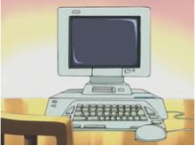
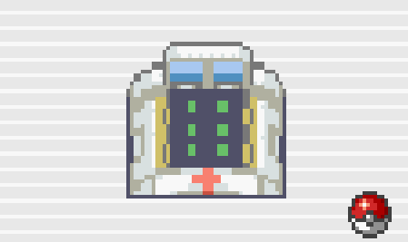

Services
We at the Pokémon Center provide multiple free services to any of our visitors. Every one of our centers across the world of Pokémon is equipped with one of our patented healing stations. This machine allows for the healing of an entire party of Pokémon in under 5 seconds. The healing machine is able to heal Pokémon of any damage, status effects, and can even revive fainted Pokémon. We also provide access to PCs to all trainers who do not possess the newest model of the Rotom Phone, who want to deposit or withdraw Pokémon from their box. We also provide access to Wireless and Cable Clubs, which allow trainers the opprotunity to connect to fellow trainers across the globe. Also, our Unova, Kalos, Alola, Galar, and Paldea centers are in partnership with the PokéMart, for those that want to purchase extra Pokéballs, or other items to aid on their journey.
 